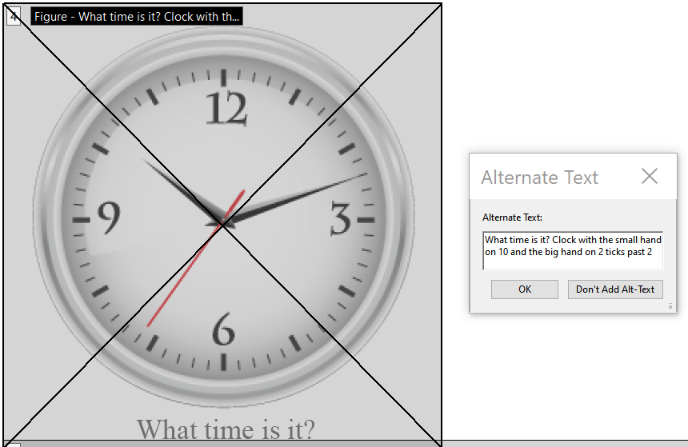

Expected Result |
All meaningful images must have a text alternative that conveys the same information as the image. |
|---|---|
Actual Result |
The meaningful image does not have a text alternative. |
Solution |
Add Alternate Text to the image either in the source document or directly in the PDF.
Adobe PDF
|
Example |
Image with CaptionThis image has a <Caption> nested within the <Figure> tag. While this is the recommended structure, screen readers do not appear to read both the Alternate Text and the Caption, but the PDF fails the accessibility check if there is no Alternate Text. A workaround is to include the Caption text in the Alternate Text. |
| Why It's Important | Blind and visually impaired users need to have a text alternative to meaningful images so that the images can be interpreted by assistive technology such as screen readers and braille devices. Without a text alternative, these users would not get the information conveyed by the image. |
| References |